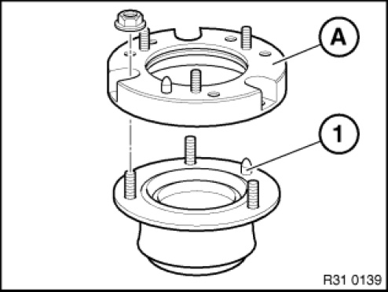
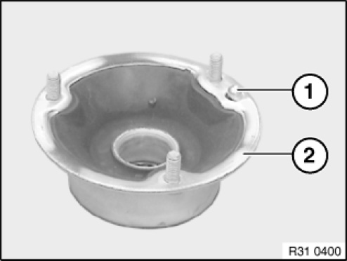

Strut Mount: Service and Repair
31 33 001 (Removing And Installing) Replacing Front Left Or Right Spring Strut Support Bearing

NOTE: Procedure is described in the document "Replacing front left or right spring strut".

Replacement:
Vehicle with spacer ring:
NOTE: Spacer ring (A) is fitted in vehicles with "rough road package" version.
Unscrew nuts.
Tightening torque 31 31 1AZ.
Remove spacer ring (A) from support bearing.
Installation note:
Align spacer ring (A) using centering pin (1) to support bearing and place in position.
Replace self-locking nuts.

If necessary, twist/drive out centring pin (1)
NOTE: If a support bearing (2) was fitted without centring pin (1), the centring pin (1) of the new support bearing (2) must be driven or twisted out.

After installation:
- If a support bearing is installed without a centring pin, perform a wheel alignment.